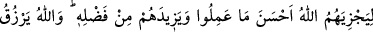
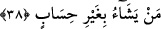
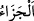
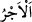
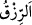
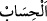

(İbrâhim, 14/42) ve “gözler yıldığı/kaydığı zaman” (el-Ahzâb, 33/10) âyetlerinde
buyrulduğu üzere korkudan dışarı fırlamaları mânâsınadır. Ya da o gün kalpler, kurtuluş
beklentisi ve helâk korkusu arasında gider gelir. Gözler de hangi yönden azâb
kendilerini yakalayacak ve kitapları hangi taraftan verilecek diye korku ve dehşet
içerisinde döner durur.
38. Çünkü (o günde) Allah, onları yaptıklarının en güzeli ile mükâfatlandıracak
ve lütfundan onlara fazlasıyla verecektir. Allah, dilediğini hesapsız rızıklandırır.
Âyetin başında hazfedilmiş bir yer vardır ki onların önceki âyette anlatılan güzel
amelleri ona delâlet eder: Onları engelleyici hiçbir şey alıkoymaksızın tesbîh, zikir,
namazı ikâme etmek, zekâtı vermek ve korku gibi yapmaya devam ettikleri şeyleri
yaparlar. “Çünkü (o günde) Allah, onları yaptıklarının en güzeli ile” yâni Allah’ın bir
iyiliğe karşılık ondan yedi yüz katına kadar iyilikle mukabele edeceği vaadine göre
amellerinin karşılığının en güzeli ile “mükâfatlandıracak ve lütfundan onlara
fazlasıyla” amelleri mukabilinde kendilerine vaadde bulunmadığı, hatırlarına bile
gelmeyen şeyler “verecektir.”
“
” Hayırsa hayır, şer ise şer yeteri kadar verilen karşılıktır. “
” ise güzel
mükâfât ve karşılıkta bulunmaya mahsustur. Nitekim el-Müfredât’ta böyle geçmektedir.
Bu amel karşılığı olmayan özel bir ihsandır.
“Allah dilediğini hesapsız rızıklandırır.” Bu ifâde, Allah’ın fazladan ihsanda
bulunacağını gösterdiği gibi Allah’ın kudretinin kemâlini, meşîetinin geçerliliğini ve
ihsânının genişliğini hatırlatmaktadır. “
” bol ihsan, “
” ise sayı kullanma
demektir. Yâni Allah dilediğine halkın hesâbına kitâbina sığmayan sevap verir.
Sahâbeden çokları (r.anhüm) bu âyetin ticâreti terk edip mescidlerden ayrılmayan
ashâbı-ı suffa ve benzerleri hakkında değil, ezanı duyunca bütün meşguliyetlerini
terkedip namaza koşan ticâret erbâbı hakkında indiğini söylemişlerdir. Çünkü Allah
Teâlâ burada zekat vermekten bahsetmektedir. Halbuki ashâb-ı suffa ve benzerleri zekat
verecek durumda değillerdi.
İmam Râğıb der ki: “Onları ticâret... alıkoymaz” âyeti, ne ticâreti yasaklar ne de
onun hoş olmayan bir iş olduğunu bildirir. Aksine ticâretle meşgul olup namaz ve
ibâdetlerden geri kalmayı yasaklar.”
Anlatılır ki Herat vâlisi Melik Hüseyin, Kutbu’l-aktâb Hâce Bahâü’l-hak ve’d-dîn